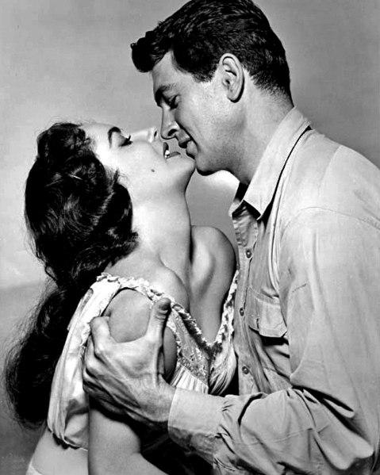
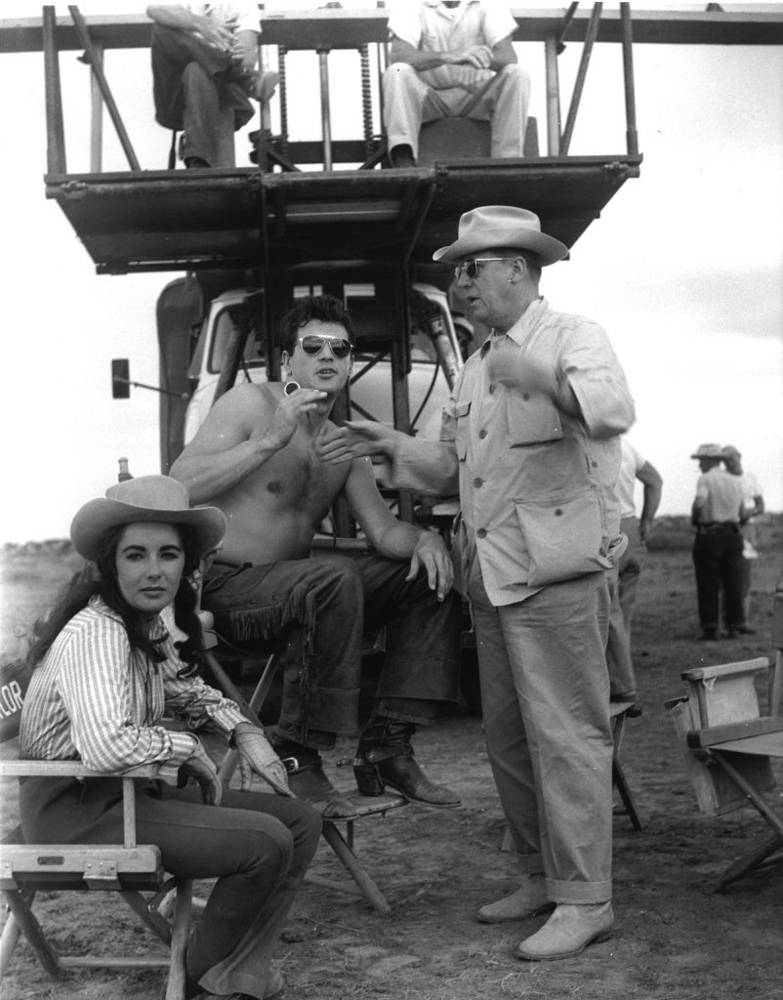
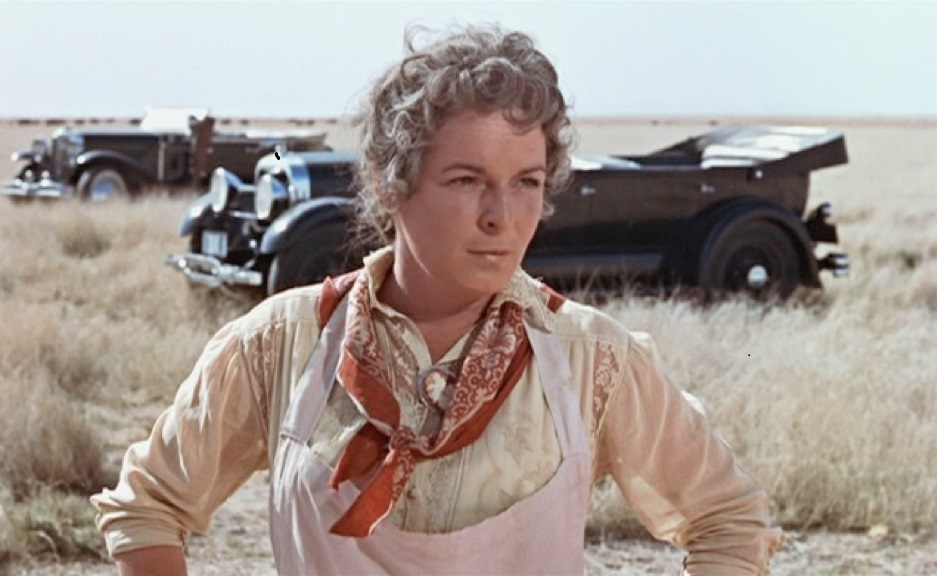
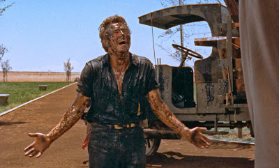
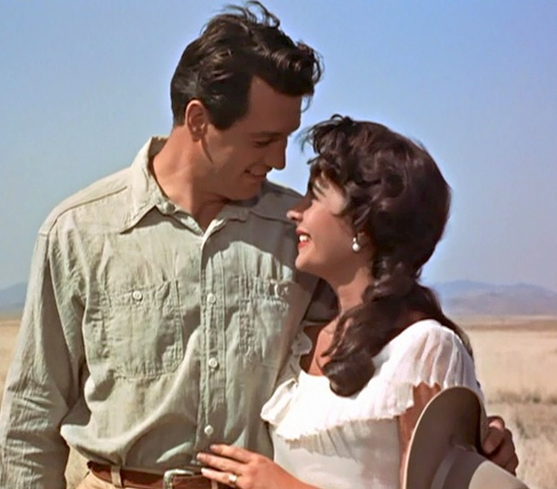
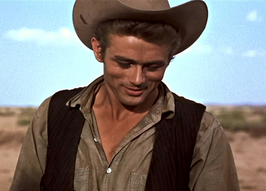

By Lucia Adams

Giant, one of the great Western movies of the 20th century, directed by George Stevens who gave us Shane though perhaps it’s not as well loved. Sprawling best describes the three hour 20 minute epic stretching from 1922 to 1952, based on the Edna Ferber satirical potboiler that offended everyone in the Lone Star state. The gaudy, rich Texas barbeque of a film gave Stevens his second Oscar for Best Director, the first received for the dark drama A Place in the Sun. The subtext of Giant, the mistreatment of Mexican vaqueros and their families in Texas, stuns with its relevance today.

It opens in genteel Virginia where Jordan “Bick” Benedict II a Texas cattle baron comes to buy a stallion, instantly falling for the thoroughbred eastern Leslie Lynnton astride War Winds. Bick wins her over, marries her and brings her home to his million acre cattle ranch Reata, filmed in Marfa on the vast Trans-Pecos plains now the trendy art town Don Judd built. The big house standing starkly on the flat land was actually a Potemkin village facade held up by four poles and the interiors were filmed in Burbank.

Bick’s macho sister Luz threatened by the Yankee bride is horrible to her and the Mexican staff at Reata then promptly gets killed by the prized stallion she is abusing. Bick doesn’t treat the Mexicans much better, upsetting Leslie who also raises his hackles with defiance of the patriarchal social order as east and west clash throughout the film. She can’t abide the wretched conditions in which the ranch hands live at Reata and takes a special interest in the Obregons and their sick baby, Angel, who will later be killed serving his new country in World War II.
Luz leaves a tiny patch of Reata to the ne’er-do-well ranch hand in a jalopy, Jett Rink, which soon gushes oil high into the sky eventually making him richer than the Benedicts, his wildcatter’s oil fortune making him King of West Texas. The most glorious scene of the film with DImitri Tomkin’s over the top score (later to be the anthem of the state) saw Jett prancing atop his small oil well, covering himself in crude then returning to the ranch and dirtying the porch while a Benedict uncle comments, ”Bick, you shoulda shot that fella a long time ago. Now he’s too rich to kill” Jett also despises the Mexicans who work for the Benedicts dismissing them as a bunch of shiftless wetbacks.

Jump ahead twenty years. Bick and Leslie’s three children are grown up; son Jordy, heir to Reata, rejects ranching, wants to go be a doctor and marries Juana, a Mexican nursing student who can’t get her hair done for her own wedding in a salon, a chilling scene of racial discrimination.
World War II needs oil forcing Bick to allow Jett to drill on Reata and, the cattle industry now receding into the history of Texas, becoming rich enough to join the oil rich circle which includes the governor of Texas and at a United States senator, all present at the opening of the Jett Rink Airport as Jett Oil trucks motor past. Inevitably there’s a classic cliché of a cowboy punching fest Jordy slugging Jett for insulting his wife to be beaten up by Jett’s men. Bick tries to punch Jett who is blind drunk.

Jordy accusas his father of being as much a racist as Jett but his son baby Jordan IV will eventually inherit Reata. Leslie wins the battle, her 25 years of liberal argument hadn’t shifted Bick out of racism but in the last scene when a diner owner tries to throw out Mexican customers it forces him to stand up and get knocked down defending his daughter-in-law and his grandson.
Ferber’s character of Bick Benedict and her description of the Reata Ranch were based on Bob Kieberg’s livestock KIng Ranch in Kingsville, Texas. Jett Rink was inspired by the rags-to-riches life story of the reckless wildcatter oil tycoon Glenn Herbert McCarthy who she met at his Houston Shamrock Hotel. By 1956 wildcatters like H. L. Hunt, Sid Richardson, Clint Murchison were global forces and Jett Rink ‘s colorful vitality was all gone. Nelson Bunker Hunt, the eldest of H. L. ’s three sons was number 1 In Forbes, no longer a wildcatter.
Giant is a melancholy elegy to a Texas long gone according to Larry McMurty. He said that forty years after the premier, Texans now loved the film, reminding them of the glorious flamboyance and audacious settlers of earlier times.

What makes Giant vibrate with life are the remarkable performances of Elizabeth Taylor and Rock Hudson, the best of their careers. Given the choice of who to play Leslie superstar Rock chose Elizabeth over Grace Kelly (hard to imagine how an ice queen would have worked in this passionate film.) Then there is James Dean’s discordant reprise. Then there is James Dean’s discordant reprise of Rebel Without a Cause with conspicuous method acting he picked up at Strasberg’s Actor’s Studio creating a divisive force on the set. Hudson hated him and they fought throughout the filming about scene stealing acting where a gesture got more attention than the script, his existential antics upstaging the lines. Elizabeth was at first irritated by Dean but sweet lady that she was eventually warmed to him becoming violently ill when he was killed in his Porsche Spyder while the film was still in production. She and Rock became lifelong friends staying up drinking vodka till 3 a.m. having to be on set at 6 a.m.

As a stage struck 14 year old I attended the premiere of the film at the Roxy on October 10, 1956 with my father a refugee from the dusty plains of West Texas to New York City. I remember the live television cameras, how tiny and gorgeous Taylor was with her enormous eyes, how tall and handsome was the teenager’s dreamboat Hudson, and how sadly absent Jimmy Dean. In the 1980s and 90s I visited Lubbock, Texas many times witnessing pretty much the same attitude the Benedicts and Rink had towards the Mexicans.